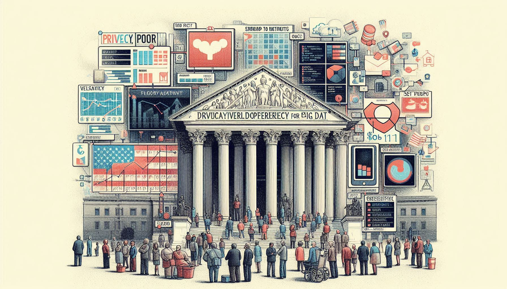

 امروزه و با گسترش علوم داده و در ادامهی آن گسترش بیسابقه هوش مصنوعی، یکی از نگاهها به این پیشرفت تکنولوژیک ، بهبود رفاه در کلیت جامعه است و دلیل آن همهگیری و دردسترس قرار گرفتن این ابزارها برای همگان هست. اما نویسندگان مقاله «حریم خصوصی، فقر و داده های بزرگ: ماتریسی از آسیبپذیریها برای آمریکایی های فقیر» 1 نگاه دیگری به این موضوع دارند . این مقاله به بررسی آسیبپذیری افراد کمدرآمد در برابر جمعآوری و تحلیل دادههای بزرگ و تحلیلهای پیشبینیکننده میپردازد و بر این باور هست که با وجود اینکه سیستمهای کلان داده میتوانند فرصتهای جدیدی را برای افراد کمدرآمد فراهم کنند، اما همچنین میتوانند نابرابری اقتصادی را تشدید کنند؛ زیرا ممکن است به دلیل سوگیریهای الگوریتمی، به آنها آسیب برسانند یا آنها را از دسترسی به فرصتها محروم کنند . این مطالعه بر جامعه آمریکا متمرکز هست .
تأثیرات فقر بر فرد و خانواده
این مقاله به بررسی تأثیرات مستقیم و غیرمستقیم فقر بر افراد میپردازد و نشان میدهد چگونه پیشرفت تکنولوژیک در این حوزه میتوانند آسیبپذیریهای موجود را تشدید کنند و به مشکلات اجتماعی و اقتصادی بیشتری منجر شود.
تأثیرات مستقیم فقر بر فرد و خانواده
کاهش دسترسی به آموزش: افراد کمدرآمد به دلیل محدودیتهای مالی و جغرافیایی، دسترسی کمتری به آموزش با کیفیت دارند. این موضوع میتواند به کاهش فرصتهای شغلی و درآمدی آنها در آینده منجر شود. ناتوانی در خرید ابزارهای مناسب مانند لپتاپ و موبایل و در نهایت عدم دسترسی ناشی از آن.
وضعیت سلامتی پایینتر: افراد فقیر به دلیل نداشتن دسترسی به خدمات بهداشتی مناسب و تغذیه کافی، با مشکلات سلامتی بیشتری مواجه هستند. این مشکلات میتواند شامل بیماریهای مزمن، سوءتغذیه و دسترسی محدود به مراقبتهای پزشکی باشد و ناتوانی در تأمین هزینههای درمانی منجر به بحرانهای سلامتی جدیتری برای آنها خواهد بود.
مسکن نامناسب: افراد فقیر اغلب در مسکنهای نامناسب و غیربهداشتی زندگی میکنند که میتواند به مشکلات بهداشتی و ایمنی منجر شود. این گروه ممکن است در مناطق پرخطر و با امکانات ناکافی زندگی کنند که این موضوع تأثیرات منفی بر کیفیت زندگی و سلامت روانی افراد داشته باشد.
امنیت غذایی ناکافی: فقر میتواند منجر به ناامنی غذایی شود، به این معنا که افراد نمیتوانند به مقدار کافی و با کیفیت مناسب غذا دسترسی داشته باشند. این وضعیت میتواند به سوءتغذیه و مشکلات سلامتی مرتبط با آن منجر شود.
بیکاری و اشتغال ناپایدار: افراد فقیر اغلب با بیکاری یا اشتغال ناپایدار مواجه هستند. این وضعیت میتواند به عدم ثبات مالی و افزایش استرس و نگرانیهای مالی منجر شود.
تأثیرات غیرمستقیم (ثانویه) فقر و نسبت آن با دادهها
تبعیض در استخدام: افرادی که در فقر زندگی میکنند، اغلب با تبعیض در فرایندهای استخدام مواجه میشوند. استفاده از دادههای شبکههای اجتماعی و ابزارهای تحلیل پیشبینانه میتواند منجر به تبعیض ناعادلانه علیه این افراد شود. این ابزارها ممکن است به دلیل تعصبات موجود در الگوریتمها، افراد فقیر و کمدرآمد را از فرصتهای شغلی محروم کنند. یکی از روشهای رایج تبعیض در استخدام، استفاده از دادههای شبکههای اجتماعی مثل لینکدین برای ارزیابی متقاضیان شغل است. کارفرمایان میتوانند با تحلیل پستها، عکسها و فعالیتهای آنلاین متقاضیان، تصمیمگیری کنند که آیا آنها مناسب برای شغل مورد نظر هستند یا خیر. این روش میتواند به دلیل انواع مختلف سوگیری موجود در دادهها و الگوریتمها، به نفع افراد مرفه و به ضرر افراد فقیر عمل کند.
دسترسی محدود به آموزش عالی: ابزارهای تحلیل دادههای بزرگ که برای پیشبینی موفقیت تحصیلی استفاده میشوند، میتوانند به نفع دانشجویان از خانوادههای مرفه باشند و دانشجویان فقیر را از دسترسی به آموزش عالی محروم کنند. دسترسی محدودتر به آموزش عالی باکیفیت، عدم دسترسی به دورههای آموزشی و معتبر خارج از دانشگاه تبدیل به رزومهای ضعیفتر در برابر رقیبهای قدرتمندی میشود که تحلیلگران در آنالیزهای خود شناسایی میکنند.
سیاست پلیسی پیشگیرانه: استفاده از ابزارهای پیشبینی تهدید و جرم پلیس میتواند منجر به هدف قرار گرفتن ناعادلانه افراد فقیر شود. این ابزارها با استفاده از دادههای بزرگ، احتمال وقوع جرم را پیشبینی میکنند و ممکن است به دلیل سوگیری موجود در دادهها که میتواند به دلیل آمار بالای جرم در مناطق فقیر باشد، این گروه را بیشتر تحت نظارت قرار دهند.
افزایش احتمال قرار گرفتن در معرض کلاهبرداریها: افراد فقیر به دلیل وابستگی بیشتر به دستگاههای موبایل و استفاده کمتر از ابزارهای حفاظت از حریم خصوصی، بیشتر در معرض بازاریابیهای فریبنده و استثمارگرانه قرار میگیرند. به عنوان مثال، افراد فقیر ممکن است به دلیل عدم آگاهی کافی از حقوق حریم خصوصی قربانی این بازاریابیها شوند و به افزایش بدهی و مشکلات مالی بیشتر برای این افراد منجر شوند.
راهکار پیشنهادی
بر اساس اطلاعات ارائه شده در مقاله و با توجه به پتانسیل دادههای بزرگ، چند راهکار برای استفاده از دادههای بزرگ جهت بهبود زندگی افراد فقیر میتوان پیشنهاد کرد:
بهبود دسترسی به خدمات: با استفاده از دادههای بزرگ میتوان الگوهای دسترسی به خدمات اساسی مانند بهداشت، آموزش و اشتغال را در مناطق کمدرآمد شناسایی کرد و برنامههای هدفمندی برای بهبود این دسترسی طراحی نمود.
شناسایی دقیقتر افراد نیازمند: با تحلیل دادههای مربوط به درآمد و هزینههای خانوارها، میتوان خانوادههایی که نیاز بیشتری به کمکهای مالی دارند را شناسایی و به آنها کمک کرد.
پیشبینی و پیشگیری از بحرانها: با تحلیل الگوهای دادهای میتوان بحرانهای اقتصادی و اجتماعی که بر فقرا تأثیر میگذارد را پیشبینی و از آنها پیشگیری کرد.
بهبود برنامههای آموزشی: با تحلیل دادههای آموزشی میتوان برنامههای آموزشی را متناسب با نیازهای افراد کمدرآمد طراحی کرد. برای مثال، تحلیل دادههای مربوط به عملکرد تحصیلی دانشآموزان میتواند نشان دهد که در کدام مناطق نیاز به برنامههای آموزشی تقویتی بیشتر است و میتوان با ارائه این برنامهها، عملکرد تحصیلی دانشآموزان را بهبود بخشید.
ارتقای فرصتهای شغلی: تحلیل دادههای بازار کار میتواند به شناسایی فرصتهای شغلی مناسب برای افراد کمدرآمد کمک کند. به عنوان مثال، تحلیل دادههای مربوط به نیازهای بازار کار میتواند نشان دهد که در کدام حوزهها نیاز به نیروی کار بیشتر است و میتوان با ارائه آموزشهای مناسب، افراد کمدرآمد را برای این فرصتهای شغلی آماده کرد.
بهبود سیاستگذاری: با استفاده از شواهد مبتنی بر داده میتوان سیاستهای مؤثرتر برای کاهش فقر را شناسایی، طراحی و اجرا کرد. البته باید توجه داشت که استفاده از دادههای بزرگ نباید منجر به نقض حریم خصوصی افراد فقیر شود. بنابراین لازم است چارچوبهای قانونی و اخلاقی مناسبی برای حفاظت از حریم خصوصی در کنار بهرهبرداری از مزایای دادههای بزرگ تدوین شود.
جمعبندی
فقر به عنوان یکی از چالشهای اساسی جوامع امروزی، تأثیرات گستردهای بر جنبههای مختلف زندگی افراد دارد. افراد فقیر به دلیل محدودیتهای مالی و اجتماعی، اغلب از دسترسی به فرصتهای برابر محروم میشوند و این موضوع میتواند به مشکلات اقتصادی و اجتماعی بیشتری منجر شود.استفاده از دادههای بزرگ میتواند به بهبود زندگی افراد فقیر کمک کند. از بهبود دسترسی به خدمات اساسی گرفته تا شناسایی دقیقتر افراد نیازمند و پیشبینی و پیشگیری از بحرانها، دادههای بزرگ میتوانند نقش مهمی در کاهش فقر و بهبود وضعیت اقتصادی و اجتماعی افراد کمدرآمد ایفا کنند.
در نهایت، برای مقابله با چالشهای مرتبط با فقر و حریم خصوصی، نیاز به سیاستگذاریهای جامع و آگاهیبخشی عمومی وجود دارد تا بتوان تأثیرات منفی فقر را کاهش داد و فرصتهای برابر برای همه افراد جامعه فراهم کرد. این اقدامات میتواند به بهبود وضعیت اقتصادی و اجتماعی افراد فقیر کمک کند و جامعهای عادلانهتر و پایدارتر ایجاد کند.
این یادداشت خلاصهای از پژوهشی است که ابتدای متن به آن اشاره شد.
پانویسها
Mary Madden, Michele Gilman, Karen Levy, Alice Marwick, Privacy, Poverty, and Big Data:A Matrix of Vulnerabilities for Poor Americans, 2017, Washington University Law Review دسترسی به مقاله↩︎